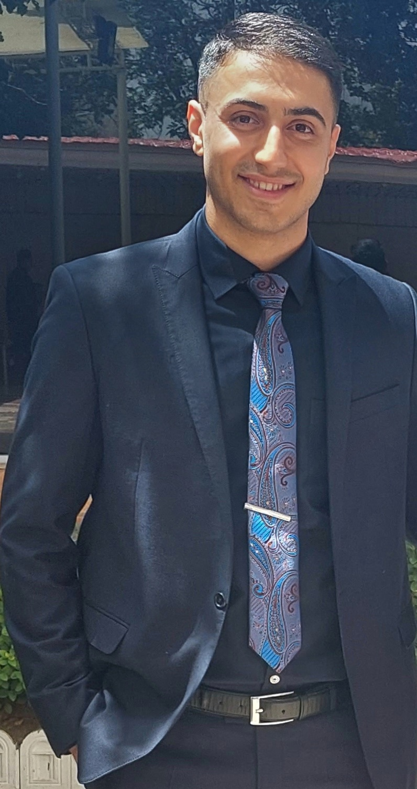

Research Assistant | Undergraduate Student | Programmer
More About Me
I am an Undergraduate Research and Teaching Assistant in the Department of Mechanical and Industrial Engineering at K. N. Toosi University of Technology. I received my B.Sc. degree in Mechanical Engineering from K. N. Toosi University of Technology, and I was fortunate to be advised by Dr. Mahkameh Sharbatdar .
My expertise lies in big data analysis and applications in smart mobility systems, traffic safety, and designing machine learning models and implementing them in transportation related problems. Furthermore, I have hands-on experience in analyzing CAV data and crash outcomes. My research areas of interest are, but are not limited to:
Teaching is my lifelong passion, and I have been involved in many teaching experiences since graduating from high school, including teaching Fundamental and Advanced Programming courses (C++ and Python) in university TA classes.
It is my nature to be ambitious and motivated by a challenge. A forceful and creative personality and a hardworking attitude are my strong points as a student. During my high school years, I became fascinated with the core concepts of computer science and programming, and the first language I learned was Python in the first grade of high school! Furthermore, I participated in the Iranian National Olympiad in Informatics in my second year of high school. I was admitted to the first round as the top 80 talented Iranian students among 9100 participants, which was a fantastic experience for me in that period. Simultaneously, I was studying for the Iran national university entrance exam (KONKUR) and participated in this exam in 2017 and ranked within the top 0.5% among 200,000 participants. During college years, I participated as a team member in the International Collegiate Programming Contest(ICPC) which is the most prestigious programming contest for college students. This contest draws more than 200 teams nationwide each year, and our team ranked among the Top 5% in 2017 and again in 2020.
You can view some of my experiences, projects, and awards that I received in the last few years down below.
Sep. 2017 - Sep. 2022
Last year GPA: 3.94/4.00 (18.45/20)
Cumulative GPA:
Sep. 2013 - Jun. 2017
Cumulative GPA: 4.00/4.00 (19.87/20)
Jan. 2021 - Dec. 2021
B.Sc. Thesis: Machine-Learning-Based Personal Thermal Comfort Modeling using
Biomarkers and Environmental Parameters.
Supervisor: Dr. Mahkameh Sharbatdar
Feb. 2021 - present
Fundamentals of Programming Course (Python)
Sep. 2020 - present
Advanced Programming Course (C++)
Oct. 2021
Feb. 2019 - Feb. 2020
Linear Algebra Course)
2014
Aug. 2017
2017
2022
I enjoy running, camping, doing gymnastics, and CrossFit, and I hope to become an L1 certified trainer this year. Furthermore, I was a member of the Boys National Gymnastics Team between 2011 and 2013.
I appreciate you taking the time to read this far down.
Please feel free to contact me at
mohamadfattahi30@gmail.com
© 2017-2022 Copyright
Mohammad Fattahi